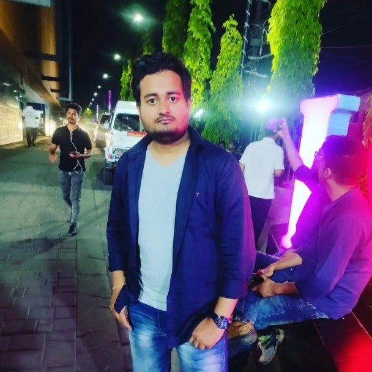

Graph Multimodal ML
Learning from structured, unstructured, and heterogeneous data to develop more capable intelligent systems.
AI Researcher · Software Engineer · Game Developer
I’m Shivam Kumar—a PhD scholar at IIT Patna and former Bosch engineer working across Graph Multimodal Machine Learning, scalable software, and Unreal Engine game development.
01 — About

Patna, Bihar, IndiaI explore how intelligent systems learn from structured, unstructured, and heterogeneous data through Graph Multimodal Machine Learning. My goal is to turn rigorous research into systems that solve meaningful real-world problems.
My industry experience at Bosch shaped how I approach reliable, scalable software. I bring that same discipline to game development—combining Unreal Engine gameplay systems with Blender-based 3D art and animation to build immersive real-time experiences.
02 — Focus
I connect advanced AI research, production-minded software engineering, and real-time game development to turn complex ideas into working experiences.
Learning from structured, unstructured, and heterogeneous data to develop more capable intelligent systems.
Clean, scalable software shaped by practical industry experience and a strong problem-solving foundation.
Gameplay systems and immersive real-time worlds in Unreal Engine, supported by Blender modeling, animation, and visual design.
03 — Journey
A journey through computer science, production software engineering, advanced AI research, and independent game development.
Education
Indian Institute of Technology, Patna
Computer Science · Graph Multimodal Machine LearningExperience
Bosch Global Software Technologies
Bengaluru, Karnataka, IndiaExperience
Bosch Global Software Technologies
Bengaluru, Karnataka, IndiaEducation
Birla Institute of Technology, Mesra
Education
MIT ADT University, Pune
04 — Selected work
A selection from more than 30 projects spanning software engineering, artificial intelligence, game development, and 3D experiences.
An interactive region-wise view of global per-capita emissions, with filters for geography, year, and sector to reveal patterns across developed and emerging economies.
A Tableau dashboard comparing regional and sector-specific emissions, renewable-energy effects, historical change, and future trends across the world.
A complete machine-learning pipeline for predicting heart disease from clinical data, covering preprocessing, exploratory analysis, model training, evaluation, and visualization.
An analysis of IBM stock data using Pandas, NumPy, and Matplotlib to explore time-series trends, statistical summaries, and key performance patterns.
A comparative machine-learning study using NumPy, NLTK, and Scikit-learn to process text, classify emotions, and improve performance through iterative evaluation.
A Python-based repository for computational DNA analysis and bioinformatics workflows.
The source code for this responsive research, software engineering, and game-development portfolio.
A C++ smart-device project exploring technology-assisted waste management.
A Java application project created around everyday grocery-management workflows.
A Java mini-project focused on a digital safety application concept.
A Java application project designed around digital support for agricultural users.
Explore my 3D animation projects, character work, and creative visual experiments on the Anime Charmer YouTube channel.
Let’s connect